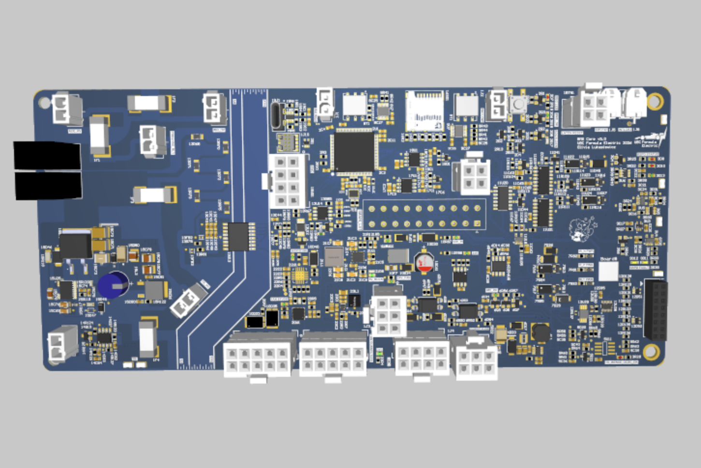
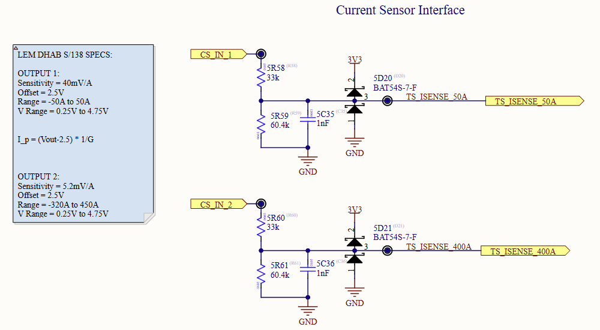
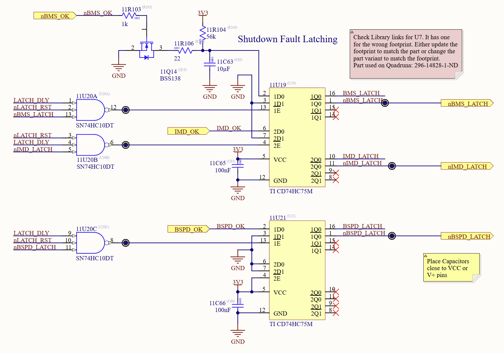

Custom 4-layer PCB for EV accumulator monitoring, safety, and telemetry
Updated the design of a custom 600V Battery Management System (BMS) PCB using Altium Designer for the UBC Formula SAE Electric vehicle. The board interfaces control electronics with high-voltage power delivery, monitors cell voltages and temperatures, enforces strict galvanic isolation via isoSPI, and transmits real-time telemetry over a CAN network.

600V BMS 3D Board View
Integrated the highly accurate ADBMS2950 IC to process precision high-voltage telemetry. This architecture performs tractive system current sensing through a custom shunt resistor PCB, feeding critical load data to the onboard processor for state-of-charge tracking and overcurrent fault diagnostics.

Engineered a purely hardware-controlled safety shutdown circuit to meet rigorous competition safety constraints. Utilizing analog comparators, NAND gates, and latches, this logic instantly isolates the high-voltage tractive system during a fault condition, bypassing software completely to ensure zero-latency fault mitigation.
